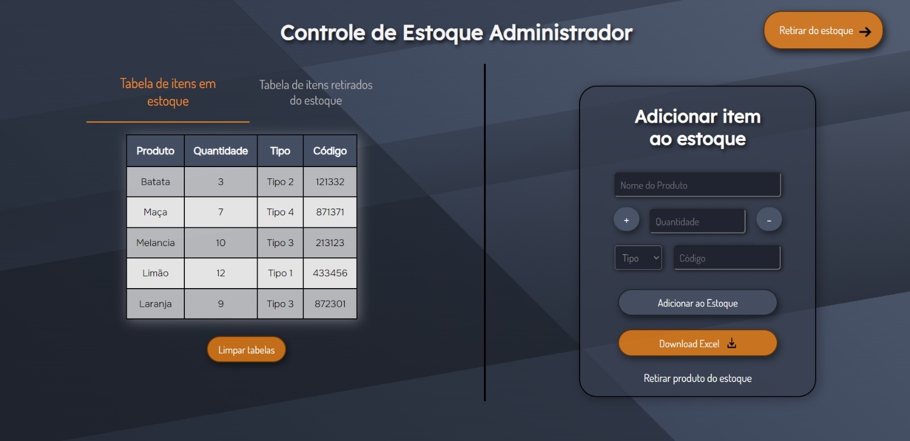
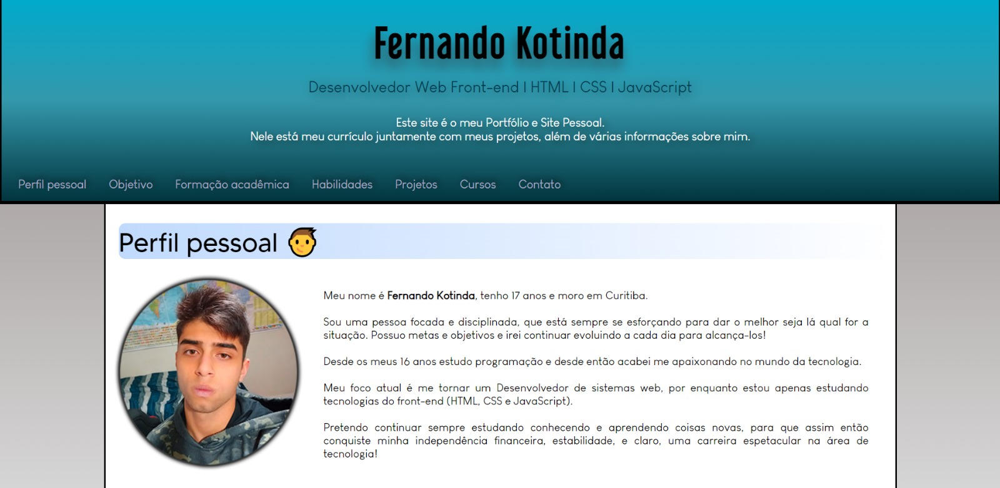
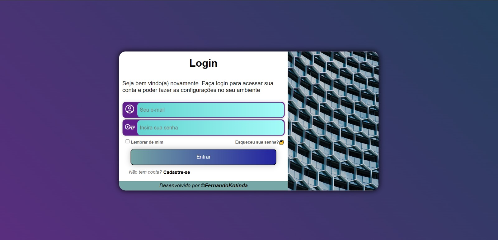

Meu nome é Fernando Kotinda, tenho 17 anos e moro em Curitiba.
Sou uma pessoa focada e disciplinada, que está sempre se esforçando para dar o melhor seja lá qual for a situação. Possuo metas e objetivos e irei continuar evoluindo a cada dia para alcança-los!
Desde os meus 16 anos estudo programação e desde então acabei me apaixonando no mundo da tecnologia.
Meu foco atual é me tornar um Desenvolvedor de sistemas web, por enquanto estou apenas estudando tecnologias do front-end (HTML, CSS e JavaScript).
Pretendo continuar sempre estudando conhecendo e aprendendo coisas novas, para que assim então conquiste minha independência financeira, estabilidade, e claro, uma carreira espetacular na área de tecnologia!
🔹 Lista dos melhores projetos que criei até agora:
Controle de Estoque(Projeto em destaque! ☆)
Este é um sistema de controle de estoque onde o administrador poderá gerenciar a entrada e saída dos produtos, será possível exportar os dados dos produtos para uma planilha de excel em que o administrador poderá vizualizar a situação dos produtos no estoque.
O sistema foi feito em HTML, CSS e com foco em JavaScript, nele usei todas as habilidades sobre meu conhecimento na linguagem, criando diversas funcionalidades além de deixar com uma esturutura organizada, e um visual atraente. Até o momento este é meu melhor e mais complexo projeto criado.
Acesse o site: Controle-de-Estoque🔗

Site Pessoal
Este é meu site pessoal e Portfólio, nele você verá informações sobre mim como meus objetivos, formação acadêmica, projetos e muito mais!
Este projeto foi feito com foco em HTML e CSS, a estrutura do site foi bem organizada e possui boas técnicas de acessibilidade.
(Esse site que você está agora).

Tela de cadastro de usuário
Este é meu site pessoal e Portfólio, nele você verá informações sobre mim como meus objetivos, formação acadêmica, projetos e muito mais!
Este projeto foi feito com foco em HTML e CSS, a estrutura do site foi bem organizada e possui boas técnicas de acessibilidade.
(Esse site que você está agora).
Acesse o site: Tela-de-cadastro-de-usuário🔗

→ Para ver estes e mais projetos criado por mim, acesse meu repositório do GitHub🔗